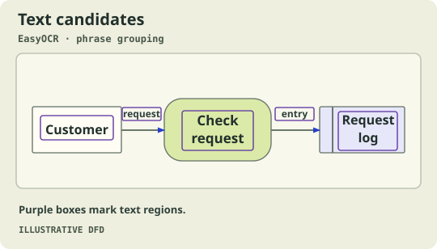
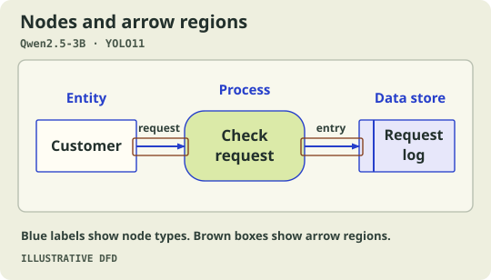
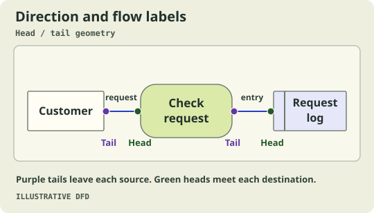
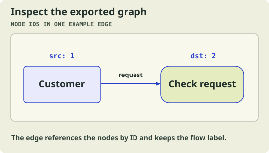
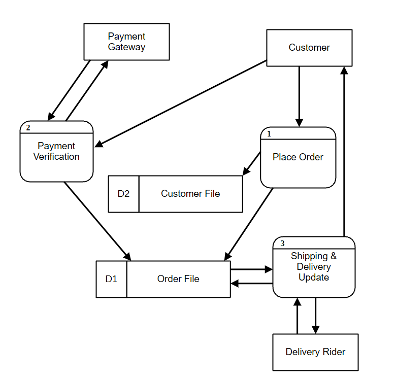
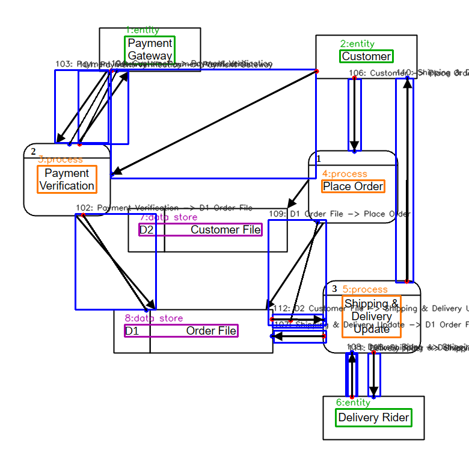

Research capstone · 2026
Reading data flow diagrams
I led a three-month capstone in my final year at ULAB in 2026. Our goal was to turn a data flow diagram image into a graph that a program could read, including the direction of each connection.
- Period
- 2026 · Three months
- My role
- Team lead, pipeline design and development
- Tools
- EasyOCR, Qwen2.5-3B, YOLO11, and Gradio
 Enlarge image
Enlarge imageWhich way does the information move?
Reading “Customer” and “Check request” from an image does not tell us which one sends information to the other. I wanted our system to recognise the entities, processes, and data stores, then recover the direction and endpoints of each arrow.
How I led the project
I planned the project, designed and developed the pipeline, and led the team through its evaluation. I organised the tests and documented the expected nodes and connections so we could compare them with the output of each stage.
How we turned a diagram into a graph
This fictional customer request illustrates our approach. We processed text and arrows separately, then brought their positions together to build the graph.
Step 1 of 4
Find candidate labels
We used EasyOCR to locate words and group nearby fragments into phrases. We separated likely node names from text that could label a flow.


Enlarge imageStep 2 of 4
Identify nodes and arrow regions
We used a fine-tuned Qwen2.5-3B classifier for node types and a fine-tuned YOLO11 detector for arrow regions. Each model handled a different part of the image.


Enlarge imageStep 3 of 4
Find the source and destination
We estimated the head and tail of each arrow from its geometry, with a colour-aware fallback. We used their positions to choose the endpoint nodes. The interactive version can also attach nearby flow-label text.


Enlarge imageStep 4 of 4
Represent the connection in JSON
We gave the nodes IDs so each edge could refer to its source and destination. In Gradio, the final graph and intermediate views make it possible to trace how a connection was assembled.
{
"src": 1,
"dst": 2,
"label": "request"
}

Enlarge imageWhat our benchmark measured
We evaluated ten handmade diagrams containing 80 annotated nodes and 106 arrows. We used micro F1 to balance how many predictions matched the reference with how many reference items the pipeline recovered.
- Node names and types
- 96.9%78 matched · 3 extra · 2 missed
- Arrow regions
- 90.7%102 matched · 17 extra · 4 missed
- Ordered source and destination
- 72.0%81 matched · 38 extra · 25 missed
- Arrow region and ordered endpoints together
- 70.2%79 matched · 40 extra · 27 missed
Our strongest result was recognising the nodes. The harder task was finding an arrow and assigning both endpoints in the correct order. For the 70.2% score, the predicted arrow box had to reach 0.50 intersection over union with its reference box, and the ordered endpoint names and types had to match.
In a separate Gradio example, our pipeline linked nine flows and attached text labels to five. The four benchmark scores above measure nodes, arrow regions, and endpoints.
Finding an arrow and reversing its meaning
In our order-processing example, the system recognised all eight nodes. It also located the arrow between Place Order and Order File, then assigned its endpoints in reverse. That error explains why I wanted to see the predictions drawn over the input as well as the score.


Enlarge image

Enlarge imageThese results describe our ten-diagram benchmark. We also tried a separate online diagram in the prototype to see how it handled a different drawing style.
Contact
Connect with me on LinkedIn or find more of my work on GitHub.